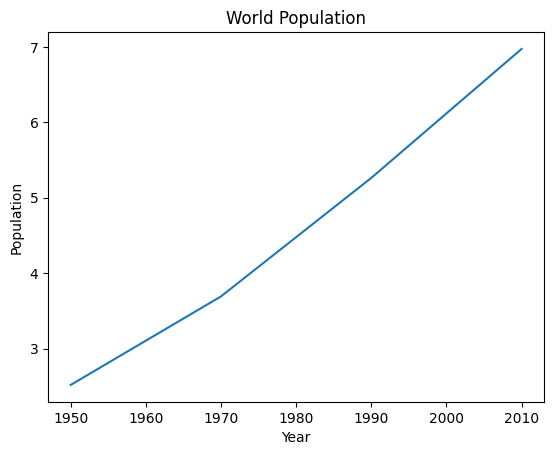
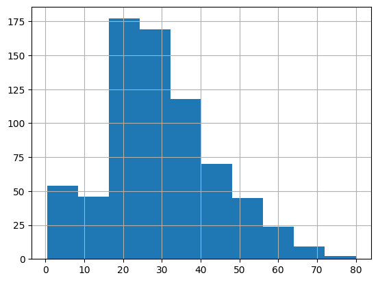
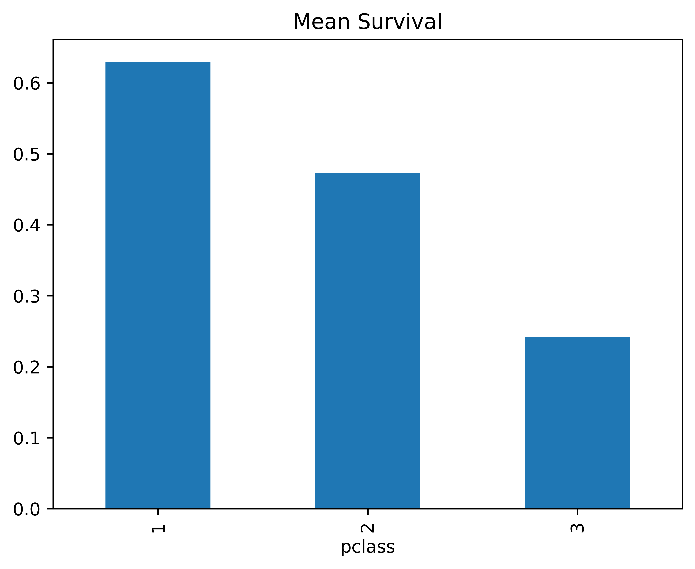
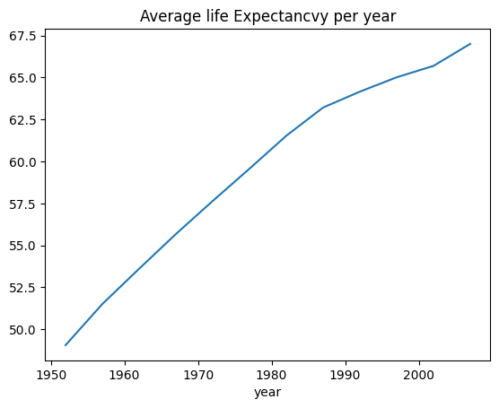

import pandas as pd
import numpy as np6 Data Summaries
In this lecture we will get to know and become experts in: 1. Data Manipulation with pandas * Handling Files * Counting and Summary Statistics * Grouped Operations 2. Plotting * matplotlib * pandas
And if you want to delve deeper, look at the Advanced topics
Relevant DataCamp lessons:
- Data manipulation with pandas, Chaps 2 and 4
- Matplotlib, Chap 1
Data Manipulation with pandas
While we have seen panda’s ability to (i) mix data types (strings, numbers, categories, Boolean, …) and (ii) refer to columns and rows by names, this library offers a lot more powerful tools for efficiently gaining insights from data, e.g.
- summarize/aggregate data in efficient pivot style manners
- handling missing values
- visualize/plot data
!pip install gapminder
from gapminder import gapminderHandling Files
Get to know your friends
pd.read_csvpd.read_tablepd.read_excel
But before that we need to connect to our Google drives ! (more instructions can be found here)
"Sam" + " Altman" 'Sam Altman'Counting and Summary Statistics
gapminder.sort_values(by="year").head()| country | continent | year | lifeExp | pop | gdpPercap | |
|---|---|---|---|---|---|---|
| 0 | Afghanistan | Asia | 1952 | 28.801 | 8425333 | 779.445314 |
| 528 | France | Europe | 1952 | 67.410 | 42459667 | 7029.809327 |
| 540 | Gabon | Africa | 1952 | 37.003 | 420702 | 4293.476475 |
| 1656 | West Bank and Gaza | Asia | 1952 | 43.160 | 1030585 | 1515.592329 |
| 552 | Gambia | Africa | 1952 | 30.000 | 284320 | 485.230659 |
#How many countries?
CtryCts = gapminder["country"].value_counts()
CtryCts
#note the similarity with np.unique(..., return_counts=True)Afghanistan 12
Pakistan 12
New Zealand 12
Nicaragua 12
Niger 12
..
Eritrea 12
Equatorial Guinea 12
El Salvador 12
Egypt 12
Zimbabwe 12
Name: country, Length: 142, dtype: int64Grouped Operations
The gapminder data is a good example for wanting to apply functions to subsets to data that correspond to categories, e.g. * by year * by country * by continent
The powerful pandas .groupby() method enables exactly this goal rather elegantly and efficiently.
First, think how you could possibly compute the average GDP seprataley for each continent. The numpy.mean(..., axis=...) will not help you.
Instead you will have to manually find all continents and then use Boolean logic:
continents =np.unique(gapminder["continent"])
continentsarray(['Africa', 'Americas', 'Asia', 'Europe', 'Oceania'], dtype=object)AfricaRows = gapminder["continent"]=="Africa"
gapminder[AfricaRows]["gdpPercap"].mean()#you could use a for loop instead, of course
gapminder[gapminder["continent"]=="Africa"]["gdpPercap"].mean()
gapminder[gapminder["continent"]=="Americas"]["gdpPercap"].mean()
gapminder[gapminder["continent"]=="Asia"]["gdpPercap"].mean()
gapminder[gapminder["continent"]=="Europe"]["gdpPercap"].mean()
gapminder[gapminder["continent"]=="Oceania"]["gdpPercap"].mean()18621.609223333333Instead, we should embrace the concept of grouping by a variable
gapminder.mean()FutureWarning: The default value of numeric_only in DataFrame.mean is deprecated. In a future version, it will default to False. In addition, specifying 'numeric_only=None' is deprecated. Select only valid columns or specify the value of numeric_only to silence this warning.
gapminder.mean()year 1.979500e+03
lifeExp 5.947444e+01
pop 2.960121e+07
gdpPercap 7.215327e+03
dtype: float64byContinent = gapminder.groupby("continent")
byContinent.mean()FutureWarning: The default value of numeric_only in DataFrameGroupBy.mean is deprecated. In a future version, numeric_only will default to False. Either specify numeric_only or select only columns which should be valid for the function.
byContinent.mean()| year | lifeExp | pop | gdpPercap | |
|---|---|---|---|---|
| continent | ||||
| Africa | 1979.5 | 48.865330 | 9.916003e+06 | 2193.754578 |
| Americas | 1979.5 | 64.658737 | 2.450479e+07 | 7136.110356 |
| Asia | 1979.5 | 60.064903 | 7.703872e+07 | 7902.150428 |
| Europe | 1979.5 | 71.903686 | 1.716976e+07 | 14469.475533 |
| Oceania | 1979.5 | 74.326208 | 8.874672e+06 | 18621.609223 |
#only lifeExp:
byContinent["lifeExp"].max()
#maybe there is more to life than the mean76.442byContinent["gdpPercap"].agg([min,max, np.mean])| min | max | mean | |
|---|---|---|---|
| continent | |||
| Africa | 241.165876 | 21951.21176 | 2193.754578 |
| Americas | 1201.637154 | 42951.65309 | 7136.110356 |
| Asia | 331.000000 | 113523.13290 | 7902.150428 |
| Europe | 973.533195 | 49357.19017 | 14469.475533 |
| Oceania | 10039.595640 | 34435.36744 | 18621.609223 |
#multiple aggregating functions (no built in function mean)
gapminder.groupby("continent")["gdpPercap"].agg([min,max, np.mean])| min | max | mean | |
|---|---|---|---|
| continent | |||
| Africa | 241.165876 | 21951.21176 | 2193.754578 |
| Americas | 1201.637154 | 42951.65309 | 7136.110356 |
| Asia | 331.000000 | 113523.13290 | 7902.150428 |
| Europe | 973.533195 | 49357.19017 | 14469.475533 |
| Oceania | 10039.595640 | 34435.36744 | 18621.609223 |
byContinentYear = gapminder.groupby(["continent", "year"])["gdpPercap"]
byContinentYear.mean()#multiple keys
gapminder["past1990"] = gapminder["year"] > 1990
byContinentYear = gapminder.groupby(["continent", "past1990"])["gdpPercap"]
byContinentYear.mean()continent past1990
Africa False 1997.008411
True 2587.246913
Americas False 6051.047533
True 9306.236000
Asia False 6713.113041
True 10280.225202
Europe False 11341.142807
True 20726.140986
Oceania False 15224.015414
True 25416.796842
Name: gdpPercap, dtype: float64Titanic data
# Since pandas does not have any built in data, I am going to "cheat" and
# make use of the `seaborn` library
import seaborn as sns
titanic = sns. load_dataset('titanic')
titanic["3rdClass"] = titanic["pclass"]==3
titanic["male"] = titanic["sex"]=="male"
titanic| survived | pclass | sex | age | sibsp | parch | fare | embarked | class | who | adult_male | deck | embark_town | alive | alone | 3rdClass | male | |
|---|---|---|---|---|---|---|---|---|---|---|---|---|---|---|---|---|---|
| 0 | 0 | 3 | male | 22.0 | 1 | 0 | 7.2500 | S | Third | man | True | NaN | Southampton | no | False | True | True |
| 1 | 1 | 1 | female | 38.0 | 1 | 0 | 71.2833 | C | First | woman | False | C | Cherbourg | yes | False | False | False |
| 2 | 1 | 3 | female | 26.0 | 0 | 0 | 7.9250 | S | Third | woman | False | NaN | Southampton | yes | True | True | False |
| 3 | 1 | 1 | female | 35.0 | 1 | 0 | 53.1000 | S | First | woman | False | C | Southampton | yes | False | False | False |
| 4 | 0 | 3 | male | 35.0 | 0 | 0 | 8.0500 | S | Third | man | True | NaN | Southampton | no | True | True | True |
| ... | ... | ... | ... | ... | ... | ... | ... | ... | ... | ... | ... | ... | ... | ... | ... | ... | ... |
| 886 | 0 | 2 | male | 27.0 | 0 | 0 | 13.0000 | S | Second | man | True | NaN | Southampton | no | True | False | True |
| 887 | 1 | 1 | female | 19.0 | 0 | 0 | 30.0000 | S | First | woman | False | B | Southampton | yes | True | False | False |
| 888 | 0 | 3 | female | NaN | 1 | 2 | 23.4500 | S | Third | woman | False | NaN | Southampton | no | False | True | False |
| 889 | 1 | 1 | male | 26.0 | 0 | 0 | 30.0000 | C | First | man | True | C | Cherbourg | yes | True | False | True |
| 890 | 0 | 3 | male | 32.0 | 0 | 0 | 7.7500 | Q | Third | man | True | NaN | Queenstown | no | True | True | True |
891 rows × 17 columns
#overall survival rate
titanic.survived.mean()0.3838383838383838Tasks:
- compute the proportion of survived separately for
- male/female
- the three classes
- Pclass and sex
- compute the mean age separately for male/female
#I would like to compute the mean survical seprately for each group
bySex = titanic.groupby("sex")
#here I am specifically asking for the mean
bySex["survived"].mean()
#if you want multiple summaries, you can list them all inside the agg():
bySex["survived"].agg([min, max, np.mean ])| min | max | mean | |
|---|---|---|---|
| sex | |||
| female | 0 | 1 | 0.742038 |
| male | 0 | 1 | 0.188908 |
#I would like to compute the mean survical seprately for each group
bySexPclass = titanic.groupby(["pclass", "sex"])
#here I am specifically asking for the mean
bySexPclass["survived"].mean()pclass sex
1 female 0.968085
male 0.368852
2 female 0.921053
male 0.157407
3 female 0.500000
male 0.135447
Name: survived, dtype: float64bySex = titanic.groupby("sex")
#here I am specifically asking for the mean
bySex["survived"].mean()Plotting
We will not spend much time with basic plots in matplotlib but instead move quickly toward the pandas versions of these functions.
#%matplotlib inline
import matplotlib.pyplot as plt
#plt.rcParams['figure.dpi'] = 800
year = [1950, 1970, 1990, 2010]
pop = [2.519, 3.692, 5.263, 6.972]
plt.plot(year, pop)
#plt.bar(year, pop)
#plt.scatter(year, pop)
plt.xlabel('Year')
plt.ylabel('Population')
plt.title('World Population')
x = 1
#plt.show()
pandas offers plots directly from its objects
titanic.age.hist()
plt.show()
And often the axis labels are taken care of
#titanic.groupby("pclass").survived.mean().plot.bar()
SurvByPclass = titanic.groupby("pclass").survived.mean()
SurvByPclass.plot(kind="bar", title = "Mean Survival");<Axes: title={'center': 'Mean Survival'}, xlabel='pclass'>
But you can customize each plot as you wish:
SurvByPclass.plot(kind="bar", x = "Passenger Class", y = "Survived", title = "Mean Survival");<Axes: title={'center': 'Mean Survival'}, xlabel='pclass'>Tasks:
- Compute the avg. life expectancy in the gapminder data for each year
- Plot this as a line plot and give meaningful x and y labels and a title
lifeExpbyYear = gapminder.groupby("year")["lifeExp"].mean()
lifeExpbyYear.plot(y= "avg. life Exp", title = "Average life Expectancvy per year");<Axes: title={'center': 'Average life Expectancvy per year'}, xlabel='year'>
Advanced topics
Creating Dataframes
- Zip
- From list of dicts
Indexing:
- multilevel indexes
- sorting
- asking for ranges
Types of columns
- categorical
- dates
# Creating Dataframes
#using zip
# List1
Name = ['tom', 'krish', 'nick', 'juli']
# List2
Age = [25, 30, 26, 22]
# get the list of tuples from two lists.
# and merge them by using zip().
list_of_tuples = list(zip(Name, Age))
list_of_tuples = zip(Name, Age)
# Assign data to tuples.
#print(list_of_tuples)
# Converting lists of tuples into
# pandas Dataframe.
df = pd.DataFrame(list_of_tuples,
columns=['Name', 'Age'])
# Print data.
df| Name | Age | |
|---|---|---|
| 0 | tom | 25 |
| 1 | krish | 30 |
| 2 | nick | 26 |
| 3 | juli | 22 |
#from list of dicts
data = [{'a': 1, 'b': 2, 'c': 3},
{'a': 10, 'b': 20, 'c': 30}]
# Creates DataFrame.
df = pd.DataFrame(data)
df| a | b | c | |
|---|---|---|---|
| 0 | 1 | 2 | 3 |
| 1 | 10 | 20 | 30 |
# Indexing:
advLesson = True
if advLesson:
frame2 = frame.set_index(["year", "state"])
print(frame2)
frame3 = frame2.sort_index()
print(frame3)
print(frame.loc[:,"state":"year"]) pop
year state
2000 Ohio 1.5
2001 Ohio 1.7
2002 Ohio 3.6
2001 Nevada 2.4
2002 Nevada 2.9
2003 Nevada 3.2
pop
year state
2000 Ohio 1.5
2001 Nevada 2.4
Ohio 1.7
2002 Nevada 2.9
Ohio 3.6
2003 Nevada 3.2
state year
0 Ohio 2000
1 Ohio 2001
2 Ohio 2002
3 Nevada 2001
4 Nevada 2002
5 Nevada 2003Inplace
Note that I reassigned the objects in the code above. That is because most operations, such as set_index, sort_index, drop, etc. do not operate inplace unless specified!